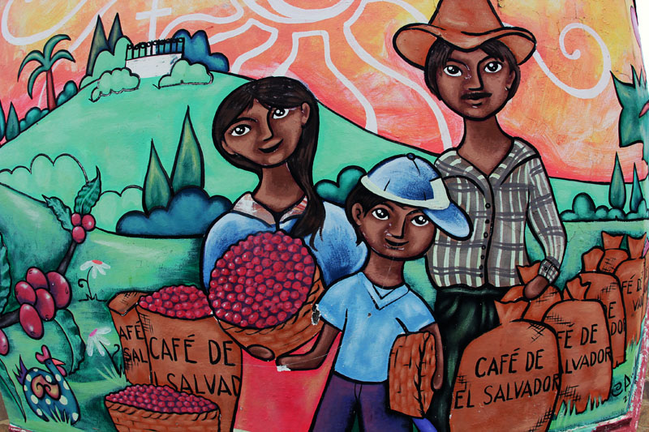
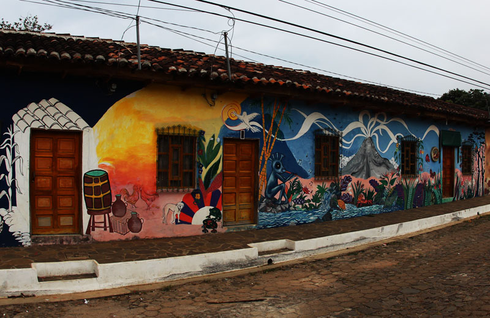
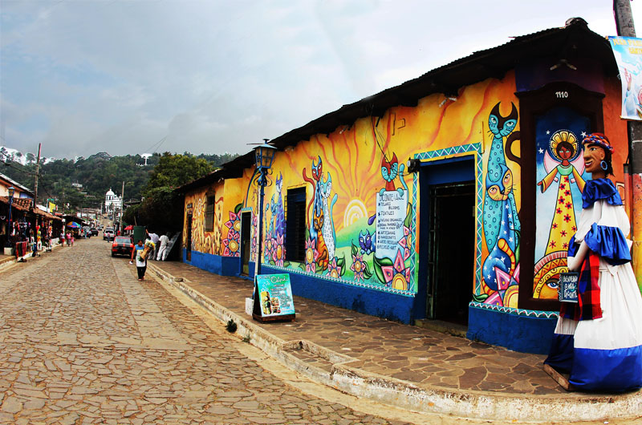
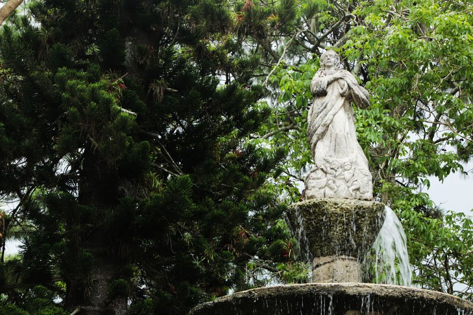

Galeria de imágenes
Aqui podra visualizar imagenes del recorrido, le mostraremos las maravillas que se podrá encontrar en la ruta de las flores. A continuación se le mostrarán las imágenes de los lugares mas memorables
 Restaurante Jardin Celeste
Restaurante Jardin Celeste
Mural #1 (Cafetaleras)
Casas llenas de murales
 Ventas de artesanias
Ventas de artesanias Mural #2 (Vistas generales)
Mural #2 (Vistas generales)Tienda tradicional de Ataco
Estatua de la Virgen de la Inmaculada (Parque
Concepcion de Ataco)
 Fuente en el parque Concepcion de Ataco
Fuente en el parque Concepcion de Ataco
 Parroquia Cristo Negro
Parroquia Cristo Negro Tienda tradicional de Ataco (Frente)
Tienda tradicional de Ataco (Frente)